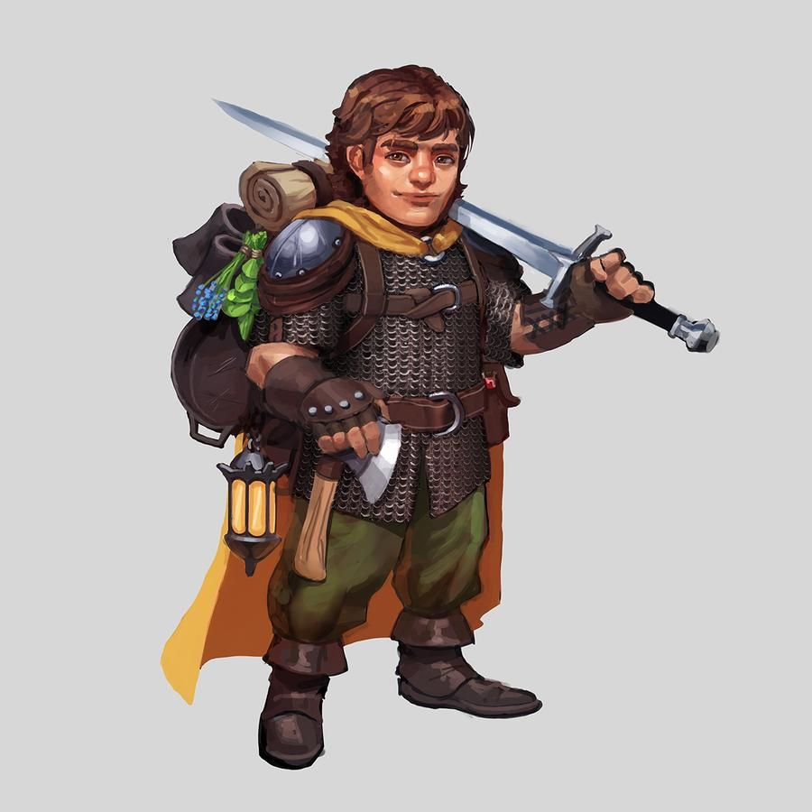

Полурослик (Halfling)
Описание
Полурослики вырастают не выше 3 футов. Их широкие загорелые столы сверху покрыты густой курчавой шерстью. Подошва обычно огрубевшая, так как полурослики предпочитают ходить босиком. Их кожа имеет насыщенный миндальный оттенок, а цвет волос чаще всего русый. Уши у них заостренные, но по пропорциям примерно соответствуют человеческим.
Общество
У полуросликов нет исторической родины и даже собственных земель, не считая горстки вольных городков и деревень. Куда чаще полуросликов можно встретить на задворках крупных людских поселений, где они пробавляются тем, что перепадает им от «старших братьев» - людей. И хотя многих из них вполне устраивает жизнь в тени высокорослых соседей, некоторые полурослики пускаются в странствия, чтобы повидать мир и познать его тайны и чудеса.
Отношения с другими расами
Полурослики гордятся своей способностью не привлекать внимания других народов, Ведь именно она помогает им достичь мастерства в воровстве и обмане.
Понимая, что нечестный образ жизни плохо сказывается на их репутации, многие полурослики стараются быть приветливыми и дружелюбными с представителями больших народов, когда хотят, чтобы их заметили. Они хорошо ладят с гномами, хотя и относятся к этим эксцентричным созданиям с изрядной долей осторожности. С людьми полурослики, как правило, вполне уживаются, но бдительности не теряют, памятуя о том, что многие воинственные представители этого народа ценят низкорослых соседей только в качестве рабов.
Полурослики уважают эльфов и дварфов, но общаются с ними не слишком часто, поскольку и те и другие живут в регионах, удаленных от цивилизации, благами которой так любит пользоваться этот маленький народец. И только полуорков они избегают: слишком уж большими и страшными кажутся те большинству полуросликов.
Мировоззрение и религия
Полурослики верны своей семье и друзьям, но, так как мир вокруг населен существами по меньшей мере вдвое большими по росту, они принимают как факт, что для выживания иногда приходится воровать и попрошайничать. По этой причине мировоззрение большинства полуросликов нейтральное. Из богов они почитают тех, кто покровительствует маленьким сплоченным сообществам, будь то добрые божества (например, Эрастил) или злые (Норгорбер).
Искатели приключений
Врожденное везение вкупе с ненасытной жаждой странствий делает полуросликов идеальными искателями приключений. Другие бродяги часто присоединяются к маленьким непоседам в надежде, что и им перепадет часть знаменитой удачи полуросликов.
Расовые особенности
+2 Ловкость, +2 Харизма, -2 Сила. Полурослики - ловкие и волевые создания, но из-за малых размеров они слабее прочих народов.
Небольшой размер. Полурослики - существа небольшого размера, поэтому они получают +1 (размер) к КБ, +1 (размер) к атакам, -1 к МБМ и ЗБМ и +4 (размер) к проверкам Скрытности.
Низкая скорость. Базовая скорость полуросликов - 20 футов.
Бесстрашный. Полурослики получают +2 (народ) ко всем испытаниям против ужаса. Этот модификатор складывается с модификатором за Удачу полурослика.
Удача полурослика. Полурослики получают +1 (народ) ко всем испытаниям.
Острые чувства. Полурослики получают +2 (народ) к проверкам Внимания.
Проворный. Полурослики получают +2 (народ) к проверкам Акробатики и Лазания.
Оружие полуросликов. Все полурослики умеют пользоваться пращами; любое оружие со словом «полуросличий» в наименовании относится к категории особого оружия для представителей этого народа.
Языки. Полурослики начинают игру со знанием всеобщего и полуросличьего языков. Полурослики с высоким значением Интеллекта могут выбрать дополнительные языки из следующего списка: гномий, гоблинский, дварфийский, эльфийский.
Назад к списку народов